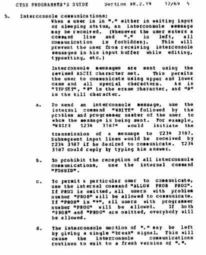

Documentation and Source for Early Electronic Mail and Messaging
This web page provides excerpts from the Compatible Time-Sharing System (CTSS) manual
for the MAIL command and the inter-user messaging facility in . SAVED,
and the actual  MAD source for the MAIL command.
See The History of Electronic Mail for the history and
The IBM 7094 and CTSS for more on the operating system.
MAD source for the MAIL command.
See The History of Electronic Mail for the history and
The IBM 7094 and CTSS for more on the operating system.
The full source of the CTSS supervisor and its commands is available in  Jerry Saltzer's files at CSAIL.
The
Jerry Saltzer's files at CSAIL.
The  second edition of the CTSS manual describes the system and its commands as of 1969. (587 pages, 25MB PDF).
second edition of the CTSS manual describes the system and its commands as of 1969. (587 pages, 25MB PDF).
CTSS MAIL
CTSS Programmer's Manual Page for MAIL
Here is Section AH.9.05 (MAIL) from the 1966 CTSS manual. In CTSS, files had two-word names, NAME1 NAME2, with the second part used by convention to show the type of file. Users had two-part names also, problem number (PROB) and programmer number (PROG).
Source of MAIL
Many CTSS commands were written in machine code (FAP).
But the new trendy way to do things (in 1965) was to use a high-level language, like  MAD.
The source should be fairly easy to read:
subroutine calls use a period after the entrypoint called,
relational operators are surrounded by periods,
literal BCD strings are enclosed in dollar signs,
vector origin is 1.
This code uses routines I wrote to print in upper and lower case (PRFULL).
The CTSS manual documents all the routines called.
You can see the system programming problem number, M1416,
and the programmer numbers of the system maintainers baked into the code.
The code was pre-Dijkstra: TRANSFER TO statements were not considered harmful yet.
"Line marked" files were new to CTSS in 1965: instead of 80-character card images they had variable length records with a length indicator.
MAD.
The source should be fairly easy to read:
subroutine calls use a period after the entrypoint called,
relational operators are surrounded by periods,
literal BCD strings are enclosed in dollar signs,
vector origin is 1.
This code uses routines I wrote to print in upper and lower case (PRFULL).
The CTSS manual documents all the routines called.
You can see the system programming problem number, M1416,
and the programmer numbers of the system maintainers baked into the code.
The code was pre-Dijkstra: TRANSFER TO statements were not considered harmful yet.
"Line marked" files were new to CTSS in 1965: instead of 80-character card images they had variable length records with a length indicator.
1 MAD PROGRAM LISTING ... ... ... FILE MAIL0 MAD 03/18/69 1011.8 - MAIL ...MAIL COMMAND ... LAST MODIFIED 3/17/69 BY R. ROACH ... ... GCLS.(A,0) WHENEVER A(1).E.FENCE.OR.A(2).E.FENCE.OR.A(3).E.FENCE PRFULL.($'R'1INSTRUCTIONS:$) PRFULL.($ '4MAIL NAME1 NAME2 PROB1 PROG1 PROB2 PROG2 ...$) PRFULL.($ WHERE '=NAME1 NAME2'= IS THE FILE TO BE MAILED,$) PRFULL.($ AND '=PROBN PROGN'= ARE DIRECTORIES TO WHICH '8$, 1 $IT IS TO BE SENT.'B$) CHNCOM.(0) END OF CONDITIONAL DIMENSION ME(2) ATTNAM.(ME(2)...3) FERRTN.(DSKER.) USER = GLOC.(COMLOC.($USER$)) UFDNAM = BZ57.(GLOC.(COMLOC.($UFDNM$)+USER)) ATTACH.(ME(2),ME(1)) GETBUF.(B1,432) GETBUF.(B2,432) FSTATE.(A(1),A(2),Z(7)...8) LTH = Z(7) WHENEVER LTH.G.432 PRFULL.(RX,A(1)...2,$ MUST BE LESS THAN 1 RECORD LONG.'B$) CHNCOM.(0) VECTOR VALUES RX = $'R'X'8$ OR WHENEVER Z(6).A.10K.NE.0.OR.Z(6).A.20K.NE.0.AND.Z.A.777777K.NE.ME PRFULL.(RX,A(1)...2,$''S MODE PREVENTS READING.'B$) CHNCOM.(0) END OF CONDITIONAL OPEN.($R$,A(1),A(2)) RDFILE.(A(1),A(2),1,BUFF(432)...LTH) CLOSE.(A(1),A(2)) WHENEVER BUFF(432).RS.18.NE. 777777K PRFULL.(RX,A(1)...2,$ MUST BE LINE MARKED.'B$) CHNCOM.(0) END OF CONDITIONAL WHOAMI.(PROB...2) DIMENSION PROG(1) EQUIVALENCE (PROB,PROG(1)) PROB1 = LJUST.(PROB) PROG1 = BZ57.(PROG) PROBN = BZ57.(PROB) GETTM.(DATE,TIME) LTH = LTH+11 CINDEX = 3 CKMETA WHENEVER A(CINDEX).E.$(LIST)$ LIST=1B N1 = A(CINDEX+1) N2 = A(CINDEX+2) BFOPEN.($R$,N1,N2,B1(B1+432),-0,-0,DSKER.) GTWDBX.(N1,N2) CINDEX = CINDEX + 3 TRANSFER TO CKMETA OR WHENEVER A(CINDEX).E.$ *$.AND.A(CINDEX+1).E.$ *$ CINDEX = CINDEX+2 USRCHK.(PROB,PROG,CKMETA) BB=2 TRANSFER TO SRCH OR WHENEVER A(CINDEX).E.$(URGT)$ CINDEX = CINDEX+1 USRCHK.(PROB,PROG,CKMETA) BOX = MAIL MAIL = $URGENT$ TRANSFER TO CKMETA END OF CONDITIONAL GETARG ARGS.(ALL) TRANSFER TO GETARG ALL CONTINUE THROUGH ASEND, FOR I=0,2,I.GE.AA ASEND SEND.(APRG(I),APRG(I+1)) SRCH WHENEVER BB.G.0 OPNMF. SLOOP RDMF.(X,Y) THROUGH BSEND,FOR C=0,2,C.G.BB WHENEVER X.E.BPRG(C).OR.BPRG(C).E.$ALLALL$ WHENEVER Y.E.BPRG(C+1).OR.BPRG(C+1).E.$ALLALL$,SEND.(X,Y) END OF CONDITIONAL BSEND CONTINUE TRANSFER TO SLOOP EX BFCLOS.(MFD,FILE) END OF CONDITIONAL CHNCOM.(0) NORMAL MODE IS INTEGER DIMENSION A(20),APRG(202),BPRG(22) DIMENSION B1(0), B2(0) DIMENSION Z(7) BOOLEAN LIST VECTOR VALUES MFD=$M.F.D.$ VECTOR VALUES UFD=$U.F.D.$ VECTOR VALUES FILE=$(FILE)$ VECTOR VALUES MAIL=$ MAIL$ VECTOR VALUES BOX=$ BOX$ VECTOR VALUES BPRG = $ALLALL$, $ALLALL$ VECTOR VALUES AA = 0 VECTOR VALUES BB = 0 VECTOR VALUES FENCE=777777777777K DIMENSION BUFF(443) EQUIVALENCE (BUFF(443),LM) VECTOR VALUES LM = 777777000012K VECTOR VALUES BUFF(442) = $ FROM $ EQUIVALENCE (BUFF(441),PROB1), (BUFF(440),PROG1) VECTOR VALUES BUFF(439) = 603145605757K EQUIVALENCE (BUFF(438),PROBN) VECTOR VALUES BUFF(437) = 605757575757K EQUIVALENCE (BUFF(436),UFDNAM) VECTOR VALUES BUFF(435) = 605721636057K EQUIVALENCE (BUFF(434),DATE), (BUFF(433),TIME) INTERNAL FUNCTION(X,Y) ENTRY TO USRCHK. WHENEVER X.NE.$ M1416$ .OR. (Y.NE.$ 385$ .AND. Y 1 .NE. $ 4301$ .AND. Y .NE. $ 2962$ .AND. Y .NE. 2 $ 3845$) 3 , ERROR RETURN FUNCTION RETURN END OF FUNCTION INTERNAL FUNCTION(THRU) ENTRY TO ARGS. STATEMENT LABEL THRU WHENEVER LIST GTWD.(X,THRU) GTWD.(Y,THRU) OTHERWISE X=A(CINDEX) Y=A(CINDEX+1) WHENEVER X.E.FENCE.OR.Y.E.FENCE,TRANSFER TO THRU CINDEX=CINDEX+2 END OF CONDITIONAL WHENEVER X.E.$ *$ BPRG(BB)=$ALLALL$ BPRG(BB+1)=Y.A.777777777717K BB=BB+2 OR WHENEVER Y.E.$ *$ BPRG(BB)=REPROB.(X) BPRG(BB+1)=$ALLALL$ BB=BB+2 OTHERWISE APRG(AA)=REPROB.(X) APRG(AA+1)=Y.A.777777777717K AA=AA+2 END OF CONDITIONAL WHENEVER AA.G.200.OR.BB.G.20 PRINT COMMENT $TOO MANY ADDRESSEES$ TRANSFER TO THRU END OF CONDITIONAL FUNCTION RETURN END OF FUNCTION INTERNAL FUNCTION ENTRY TO OPNMF. ATTACH.(MFD,FILE) BFOPEN.($R$,MFD,FILE,B2(B2+432),-0,-0,DSKER.) ATTACH.(ME(2),ME(1)) BFREAD.(MFD,FILE,Z(3)...3,DSKER.,-0,DSKER.) FUNCTION RETURN END OF FUNCTION INTERNAL FUNCTION(X,Y) ENTRY TO RDMF. RR BFREAD.(MFD,FILE,Z(7)...7,EX,-0,DSKER.) X=Z(7) Y=Z(6) WHENEVER X.E.0.OR.Y.E.0.OR.X.E.UFD,TRANSFER TO RR WHENEVER Y.RS.12.E.$00CMFL$,TRANSFER TO RR FUNCTION RETURN END OF FUNCTION INTERNAL FUNCTION(M,N) ENTRY TO SEND. Z=SMAIL.(M,N,LM,LTH,MAIL,BOX) WHENEVER Z.E.0 FUNCTION RETURN OR WHENEVER Z.E.4 PRFULL.(RX,M,RX,N,$ NOT FOUND.'B$) OR WHENEVER Z.E.3 PRFULL.(RX,M,RX,N,$ DOES NOT WANT MAIL.'B$) OR WHENEVER Z.E.2 PRFULL.(RX,M,RX,N,$''S MAIL BOX IS BUSY.'B$) OTHERWISE PRFULL.($'R DISK ERROR SENDING TO'8$,M,N,$'B'8$) END OF CONDITIONAL FUNCTION RETURN END OF FUNCTION END OF PROGRAM 1 MAD PROGRAM LISTING ... ... ... FILE SMAIL MAD 03/18/69 1008.6 - ...FUCTION SENDS MAIL TO A USER EXTERNAL FUNCTION(AD1,AD2,BUF,N,N1,N2) ENTRY TO SMAIL. NORMAL MODE IS INTEGER A=4 UNLINK.(T1,T2,S1) S1 LINK.(T1,T2,AD1,AD2,N1,N2,0,S7) A=A-1 TILOCK.(S5) FSTATE.(T1,T2,MODE(1)...2,S2) WHENEVER MODE .A. 124K .NE. 0, TRANSFER TO S6 CHFILE.(T1,T2,1,-0,-0,S2) S2 OPEN.($W$,T1,T2,1,2,S6) A=A-1 BUFFER.(T1,T2,B1(432)...432) WRFILE.(T1,T2,0,BUF...N,-0,-0,S3) S3 CLOSE.(T1,T2,S4) A=A-1 S4 CHFILE.(T1,T2,0,-0,-0,S5) S5 A=A-1 S6 UNLINK.(T1,T2,S7) S7 FUNCTION RETURN A VECTOR VALUES T1=$TEM$ VECTOR VALUES T2=$BOX$ DIMENSION B1(432), MODE(1) END OF FUNCTION
Inter-User Messaging
Bob Fenichel designed the original feature of CTSS that allowed inter-user messaging.
Here is the part of Section AH.2.19 (. SAVED) of the 1969 editon of the CTSS manual that describes inter-user messaging. The feature described was written in 1965 as a user-contributed program (by Noel Morris and me), but did not become part of the official CTSS manual until 1969.

Posted 8 March 2008
Copyright (c) 2008 by Tom Van Vleck